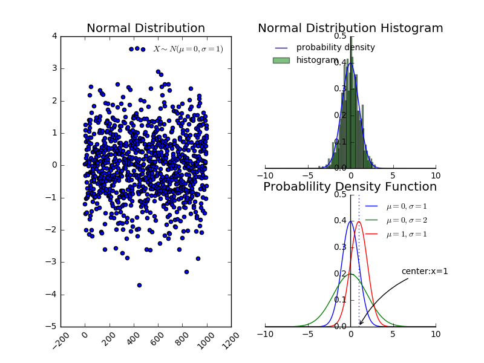

1.条件概率：已知 \(A\) 事件发生的条件下 \(B\) 发生的概率，记作 \(P(B/A)\)，它等于事件 \(AB\) 的概率相对于事件 \(A\) 的概率，即： \(P(B/A)=\frac {P(AB)}{P(A)}\),其中必须有 \(P(A) \gt 0\)
2.独立事件：如果 \(P(AB)=P(A)P(B) \) 则称两个事件 \(A,B\) 是独立的。不独立的两个事件称之为相依的。
3.定义\(\mathrm{X}\) 和 \(\mathrm{Y}\) 的联合分布为： \( P(a,b)=P\{X \le a, Y \le b\}, - \infty \lt a,b \lt + \infty \)
\(\mathrm{X}\) 的分布可以从联合分布中得到：
\( P_X(a)=P\{X \le a\}=P\{X \le a, Y \le \infty\}=P(a,\infty), - \infty \lt a \lt + \infty \)
类似的，\(\mathrm{Y}\) 的分布可以从联合分布中得到：
\( P_Y(b)=P\{Y \le b\}=P\{X \le \infty, Y \le b\}=P(\infty,b), - \infty \lt b \lt + \infty \)
$$ p_X(x)=\sum_{y \;:\;p(x,y) \gt 0}p(x,y) \\ p_Y(y)=\sum_{x \;:\;p(x,y) \gt 0}p(x,y) $$
当 \(\mathrm{X}\) 和 \(\mathrm{Y}\) 联合地连续时，即存在函数 \(f(x,y)\) ，使得对于所有的实数集合 \(A\) 和 \(B\) 满足： \(P\{X \in A, Y \in B\}=\int_B \int_A f(x,y) dx dy\)，则函数 \(f(x,y)\) 称为 \(\mathrm{X}\) 和 \(\mathrm{Y}\) 的概率密度函数。
联合分布为\(P(a,b)=P\{X \le a, Y \le b\}= \int_{-\infty}^{a} \int_{-\infty}^{b} f(x,y) dx dy\)。\(\mathrm{X}\) 和 \(\mathrm{Y}\) 的概率密度函数以及分布函数粉分别为：
$$ P_X(a)=\int_{-\infty}^{a} \int_{-\infty}^{\infty} f(x,y) dx dy =\int_{-\infty}^{a} f_X(x)dx\\ P_Y(b)=\int_{-\infty}^{\infty} \int_{-\infty}^{b} f(x,y) dx dy=\int_{-\infty}^{b} f_Y(y)dy\\ f_X(x)=\int_{-\infty}^{\infty} f(x,y) dy\\ f_Y(y)=\int_{-\infty}^{\infty} f(x,y) dx $$
1.期望：（是概率分布的泛函，函数的函数）
期望描述了随机变量的平均情况，衡量了随机变量 X 的均值
2.定理：设 \(Y=g(X)\) 均为随机变量，g 是连续函数
该定理的意义在于：当求 E(Y) 时，不必计算出 Y 的分布，只需要利用 X 的分布即可
该定理可以推广至两个或者两个以上随机变量的情况。此时用 \(E(Z)=E[g(X,Y)]=\int_{-\infty}^{\infty}\int_{-\infty}^{\infty}g(x,y)f(x,y)dxdy\)。
3.期望性质：
1.对随机变量 X ，若 \(E\{ [X-E(X)]^{2}\}\) 存在，则称它为 X 的方差，记作 Var(X)。 X 的标准差为方差的开平方，即： $$ Var(X)=E\{ [X-E(X)]^{2}\} \\ \sigma=\sqrt{Var(X)} $$
方差度量了随机变量 X 与期望值偏离的程度，衡量了 X 取值分散程度的一个尺度。由于绝对值 |X-E(X)| 带有绝对值，不方便运算，因此采用平方来计算。又因为 \(|X-E(X)|^2\) 是一个随机变量，因此对它取期望，即得 X 与期望值偏离的均值
2.根据定义可知， \(Var(X)=E\{ [X-E(X)]^{2}\}=E(X^{2})-[E(X)]^{2}\)
3.对于一个期望为 \(\mu\)， 方差为 \(\sigma^{2},\sigma \ne 0\) 的随机变量 X，随机变量 \(X^{\ast}=\frac {X-\mu}{\sigma}\) 的数学期望为0，方差为1.称 \(X^{\ast}\) 为 X 的标准化变量
4.方差的性质：
5.协方差：对于二维随机变量 (X,Y) ，我们可以讨论描述 X 与 Y 之间相互关系的数字特征。定义 \(E\{[X-E(X)][Y-(E(Y)]\}\) 为随机变量 X 与 Y 的协方差，记作 \( Cov(X,Y)=E\{[X-E(X)][Y-(E(Y)]\}\)，定义 \(\rho_{XY}=\frac {Cov(X,Y)}{\sqrt{Var(X)}\sqrt{Var(Y)}}\) 为随机变量 X 与 Y 的相关系数。由定义可知：
6.协方差的性质：
7.相关系数的物理意义：考虑以随机变量 X 的线性函数 a+bX 来近似表示 Y。我们以均方误差 $$ e=E[(Y-(a+bX))^{2}]=E(Y^{2})+b^{2}E(X^{2})+a^{2}-2bE(XY)+2abE(X)-2aE(Y) $$ 来衡量以 a+bX 近似表达 Y 的好坏程度。 e 越小表示近似程度越高。为求得最好的近似，则对 a,b 分别取偏导数，得到：
$$ a_0=E(Y)-b_0E(X)=E(Y)-E(X)\frac{Cov(X,Y)}{Var(X)}\\ b_0=\frac{Cov(X,Y)}{Var(X)}\\ \min(e)=E[(Y-(a_0+b_0X))^{2}]=(1-\rho^{2}_{XY})Var(Y) $$ 因此有以下定理：
当\(|\rho_{XY}|\) 较大时， e 较小，表明随机变量 X 和 Y 联系较紧密，于是 \(\rho_{XY}\) 是一个表征 X，Y 之间线性关系紧密程度的量。
8.当 \(\rho_{XY}=0\) 时，称 X 和 Y 不相关。 不相关是就线性关系来讲的，而相互独立是一般关系而言的。相互独立一定不相关；不相关则未必独立。
9.矩：设 X 和 Y 是随机变量
因此期望是一阶原点矩，方差是二阶中心矩，协方差是二阶混合中心矩
10.协方差矩阵：二维随机变量\((X_1,X_2)\) 有四个二阶中心矩（设他们都存在），记作： $$ \begin{align} c_{11}&=E\{[X_1-E(X_1)]^{2}\} \\ c_{12}&=E\{[X_1-E(X_1)][X_2-E(X_2)]\} \\ c_{21}&=E\{[X_2-E(X_2)][X_1-E(X_1)]\} \\ c_{22}&=E\{[X_2-E(X_2)]^{2}\} \\ \end{align} $$
这个矩阵称作随机变量 \((X_1,X_2)\) 的协方差矩阵。
设 n 维随机变量 \((X_1,X_2,\cdots,X_n)\) 的二阶混合中心矩 \(c_{ij}=Cov(X_i,X_j)=E\{[X_i-E(X_i)][X_j-E(X_j)]\},i,j=1,2,\cdots,n\), 都存在，则称矩阵
$$ C= \begin{pmatrix} c_{11} & c_{12} & \cdots & c_{1n} \\ c_{21} & c_{22} & \cdots & c_{2n} \\ \vdots &\vdots &\ddots &\vdots \\ c_{n1} & c_{n2} & \cdots & c_{nn} \\ \end{pmatrix} $$
为 n 维随机变量 \((X_1,X_2,\cdots,X_n)\) 的协方差矩阵。 由于 \(c_{ij}=c_{ji}, i\ne j, i,j=1,2,\cdots,n\) 因此协方差矩阵是个对阵阵
通常 n 维随机变量的分布是不知道的，或者太复杂以致数学上不容易处理。因此实际中协方差矩阵非常重要。
1.切比雪夫不等式：随机变量 X 具有期望 \(E(X)=\mu\)， 方差 \(Var(X)=\sigma^{2}\) , 对于任意正数 \(\varepsilon\) ，不等式 $$P\{|X-\mu| \ge \varepsilon\} \le \frac {\sigma^{2}}{\varepsilon^{2}}$$ 成立
其意义是：对于距离 E(X) 足够远的地方 （距离大于等于 \(\varepsilon\) ），事件出现的概率是小于等于 \( \frac {\sigma^{2}}{\varepsilon^{2}}\)；事件出现在区间 \([\mu-\varepsilon , \mu+\varepsilon]\) 的概率大于 \(1- \frac {\sigma^{2}}{\varepsilon^{2}}\)
该不等式给出了随机变量 X 在分布未知的情况下， 事件 \(\{|X-\mu| \le \varepsilon\}\) 的下限估计（。如 \(P\{|X-\mu| \lt 3\sigma\} \ge 0.8889\)
证明： $$ P\{|X-\mu| \ge \varepsilon\}=\int_{|x-\mu| \ge \varepsilon}f(x)dx \le \int_{|x-\mu| \ge \varepsilon} \frac{|x-\mu|^{2}}{\varepsilon^{2}}f(x)dx \\ \le \frac {1}{\varepsilon^{2}}\int_{-\infty}^{\infty}(x-\mu)^{2}f(x)dx=\frac{\sigma^{2}}{\varepsilon^{2}} $$
2.切比雪夫不等式的特殊情况：设随机变量 \(X_1,X_2,\cdots,X_n,\cdots\) 相互独立，且具有相同的数学期望和方差： \( E(X_k)=\mu, Var(X_k)=\sigma^{2},k=1,2,\cdots\)。 作前 n 个随机变量的算术平均： \( \overline X =\frac {1}{n} \sum _{k=1}^{n}X_k\), 则对于任意正数 \( \varepsilon\) 有：
$$ \lim_{n\rightarrow \infty}P\{|\overline X-\mu| \lt \varepsilon\}=\lim_{n\rightarrow \infty}P\{|\frac{1}{n}\sum_{k=1}^{n}X_k-\mu| \lt \varepsilon\} =1 $$
证明：
$$ E[\frac{1}{n}\sum_{k=1}^{n}X_k]=\mu\\ D[\frac{1}{n}\sum_{k=1}^{n}X_k]=\frac{\sigma^{2}}{n} $$
有切比雪夫不等式，以及 n 趋于无穷时，可以证明。详细过程省略
3.依概率收敛：设 \(Y_1,Y_2,\cdots,Y_n,\cdots\) 是一个随机变量序列， a 是一个常数。若对于任意正数 \( \varepsilon\) 有 ： \(\lim_{n\rightarrow \infty}P\{|Y_{n}-a| \le \varepsilon \}=1\) ,则称序列 \(Y_1,Y_2,\cdots,Y_n,\cdots\) 依概率收敛于 a 。记作： \(Y_{n} \stackrel{P}{\rightarrow} a\)
依概率收敛的两个含义：
4.大数定理一： 设随机变量 \(X_1,X_2,\cdots,X_n,\cdots\) 相互独立，且具有相同的数学期望和方差： \( E(X_k)=\mu, Var(X_k)=\sigma^{2},k=1,2,\cdots\)。 则序列： \( \overline X =\frac {1}{n} \sum _{k=1}^{n}X_k\) 依概率收敛与 \(\mu\) ， 即 \(\overline X \stackrel{P}{\rightarrow} \mu\)
5.伯努利大数定理： 设 \(n_A\) 为 n 次独立重复实验中事件 A 发生的次数， p 是事件 A 在每次试验中发生的概率。则对于任意正数 \( \varepsilon\) 有：
$$ \lim_{n \rightarrow \infty}P\{|\frac{n_{A}}{n}-p| \lt \varepsilon\}=1 \\ or: \quad \lim_{n \rightarrow \infty}P\{|\frac{n_{A}}{n}-p| \ge \varepsilon\}=0 $$
6.辛钦定理：设随机变量 \(X_1,X_2,\cdots,X_n,\cdots\) 相互独立，服从同一分布，且具有相同的数学期望： \( E(X_k)=\mu,k=1,2,\cdots\)。 则对于任意正数 \( \varepsilon\) 有：
$$ \lim_{n\rightarrow \infty}P\{|\frac{1}{n}\sum_{k=1}^{n}X_k-\mu| \lt \varepsilon\} =1 $$
这里并没有要求 随机变量 \(X_1,X_2,\cdots,X_n,\cdots\) 的方差存在。伯努利大数定理是亲钦定理的特殊情况。
7.独立同分布的中心极限定理：设随机变量 \(X_1,X_2,\cdots,X_n\) 独立同分布，且具有数学期望和方差： \(E(X_k)=\mu, Var(X_k)=\sigma^{2} \gt 0,k=1,2,\cdots\)， 则随机变量之和 \(\overline {SX_n}=\sum_{k=1}^{n} X_k\) 的标准变化量:
$$ Y_n=\frac{\overline {SX_n}-E(\overline {SX_n})}{\sqrt{Var(\overline {SX_n})}}=\frac{\overline {SX_n}-n\mu}{\sqrt n \sigma} $$ 的概率分布函数 \(F_n(x)\) 对于任意 x 满足：
$$ \lim_{n\rightarrow \infty}F_n(x)=\lim_{n\rightarrow \infty}P\{Y_n \le x\}\\ =\lim_{n\rightarrow \infty}P\{\frac{\sum_{k=1}^{n} X_k-n\mu}{\sqrt n \sigma} \le x\}\\ = \int_{-\infty}^{x} \frac{1}{\sqrt{2\pi}}e^{-t^{2}/2}dt=\Phi(x) $$
其物理意义为：均值方差为 \(\mu,\sigma^{2}\) 的独立同分布的随机变量 \(X_1,X_2,\cdots,X_n\) 之和 \(\overline {SX_n}=\sum_{k=1}^{n} X_k\) 的标准变化量，当 n 充分大时，其分布近似与标准正态分布。即， \(\overline {SX_n}=\sum_{k=1}^{n} X_k\) 在 n 充分大时，其分布近似于 \(N(\mu,\sigma^{2}/n)\)
一般情况下，我们很难求出 n 个随机变量之和的分布函数。因此当 n 充分大时，我们可以通过正态分布来做理论上的分析或者计算。
8.Liapunov 定理：设随机变量 \(X_1,X_2,\cdots,X_n,\cdots\) 相互独立，他们具有数学期望和方差：\(E(X_k)=\mu_k,D(X_k)=\sigma_k^{2} \gt 0, k=1,2,\cdots\)，记:\(B_n^{2}=\sum_{k=1}^{n}\sigma_k^{2}\)。 若存在正数 \(\delta\)，使得当 \(n \rightarrow \infty\) 时，
$$ \frac{1}{B_n^{2+\delta}}\sum_{k=1}^{n}E\{|X_k-\mu_k|^{2+\delta}\} \rightarrow 0 $$
则随机变量之和 \(\overline {SX_n}=\sum_{k=1}^{n} X_k\) 的标准变化量:
$$ Z_n=\frac{\overline {SX_n}-E(\overline {SX_n})}{\sqrt{Var(\overline {SX_n})}}=\frac{\overline {SX_n}-\sum_{k=1}^{n}\mu_k}{B_n} $$ 的概率分布函数 \(F_n(x)\) 对于任意 x 满足：
$$ \lim_{n\rightarrow \infty}F_n(x)=\lim_{n\rightarrow \infty}P\{Z_n \le x\}\\ =\lim_{n\rightarrow \infty}P\{\frac{\sum_{k=1}^{n} X_k-\sum_{k=1}^{n}\mu_k}{B_n} \le x\}\\ = \int_{-\infty}^{x} \frac{1}{\sqrt{2\pi}}e^{-t^{2}/2}dt=\Phi(x) $$
其物理意义为：相互独立的随机变量 \(X_1,X_2,\cdots,X_n,\cdots\) 之和 \(\overline {SX_n}=\sum_{k=1}^{n} X_k\)的衍生随机变量序列\(Z_n=\frac{\overline {SX_n}-\sum_{k=1}^{n}\mu_k}{B_n}\)，当 n 充分大时，其分布近似与标准正态分布。无论 \(X_1,X_2,\cdots,X_n,\cdots\) 服从什么分布！
一般情况下，我们很难求出 n 个随机变量之和的分布函数。因此当 n 充分大时，我们可以通过正态分布来做理论上的分析或者计算。
9.Demoiver-Laplace 定理：设随机变量序列 \(\eta_n,n=1,2,…\) 服从参数为 n, p(0<p<1) 的二项分布，则对于任意 x, 有：
$$ \lim_{n\rightarrow \infty}P\{\frac{\eta_n-np}{\sqrt{np(1-p)}} \le x\}=\int_{-\infty}^{x} \frac{1}{\sqrt{2\pi}}e^{-t^{2}/2}dt=\Phi(x) $$ 该定理表明，正态分布是二项分布的极限分布。当 n 充分大时，我们可以利用正态分布来计算二项分布的概率。
1.正态分布的概率密度函数为 : $$ f(x)=\frac{1}{\sqrt{2\pi}\sigma}e^{-(x-\mu)^{2}/(2\sigma^{2})}, -\infty \lt x \lt \infty $$
其中 \(\mu,\sigma(\sigma \gt 0) \) 为常数。若随机变量 X 的概率密度函数如上所述，则称 X 服从参数为 \(\mu,\sigma\) 的正态分布或者高斯分布，记作 \(X \sim N(\mu,\sigma^{2})\)。特别的，当 \(\mu=0,\sigma=1\) 时，称为标准正态分布，其概率密度函数记作 \(\varphi(x)\), 分布函数记作 \(\Phi(x)\)
整体分布的概率密度函数性质：
参数 \(\mu\) 决定曲线的位置； \(\sigma\) 决定图形的胖瘦
from matplotlib import pyplot as plt
import numpy as np
def n_distributin_f(mu,delta,x):
'''
返回正态分布的密度函数
:param mu: 期望值
:param delta: 方差的开方
:param x: numpy数组，x 值
:return: numpy数组，y 值
'''
return 1.0/(np.sqrt(2*np.pi)*delta)*np.exp(-((x-mu)*(x-mu))/(2*delta*delta))
def spine_ax(ax):
'''
平移坐标轴
:param ax: Axes对象
:return:
'''
ax.spines['right'].set_color('none')
ax.spines['top'].set_color('none')
ax.xaxis.set_ticks_position('bottom')
ax.spines['bottom'].set_position(('data',0))
ax.yaxis.set_ticks_position('left')
ax.spines['left'].set_position(('data',0))
def hist_normal(ax,ydata,count):
'''
绘制正态分布的直方图
:param ax:Axes 对象
:param ydata:正态分布产生的随机数序列
:param count: 直方图柱子数量
:return:
'''
ax.hist(ydata,count,facecolor='yellow')
fig=plt.figure()
ax_left=plt.subplot2grid((2,2),(0,0),rowspan=2) # 左边的图
ax_right_top=plt.subplot2grid((2,2),(0,1)) #右上方
ax_right_bottom=plt.subplot2grid((2,2),(1,1),sharex=ax_right_top) # 右下方
########## 生成数据 ##############
data_len=1000 # 一千个点
data=np.random.normal(0,1,data_len)
########## 在左侧绘制散点图 ##############
ax_left.scatter(np.arange(0,data_len),data,label=r'$X \sim N(\mu=0,\sigma=1)$')
ax_left.legend(loc='upper right',frameon=False,fontsize=10,framealpha=0.2)
for tick in ax_left.xaxis.get_ticklabels():
tick.set_rotation(45) # 旋转45度
########### 在右上方绘制直方图和概率密度函数 ##########
xdata=np.linspace(-10,10,num=200)
ax_right_top.plot(xdata,n_distributin_f(mu=0,delta=1,x=xdata),label=r'probability density')
count=50 # 直方图柱子数量
ax_right_top.hist(data,count,normed=True,alpha=0.5,label='histogram')
ax_right_top.legend(loc='upper left', frameon=False,fontsize=10,framealpha=0.2)
####### 在右下方绘制概率密度函数 ############
ax_right_bottom.plot(xdata,n_distributin_f(mu=0,delta=1,x=xdata),label=r'$\mu=0,\sigma=1$')
ax_right_bottom.plot(xdata,n_distributin_f(mu=0,delta=2,x=xdata),label=r'$\mu=0,\sigma=2$')
ax_right_bottom.plot(xdata,n_distributin_f(mu=1,delta=1,x=xdata),label=r'$\mu=1,\sigma=1$')
ax_right_bottom.axvline(x=1,linestyle='dotted', ymin=0, ymax=1)
ax_right_bottom.annotate(r'center:x=1',
xy=(1, 0), xycoords='data',
xytext=(6, 0.2), fontsize=10,
arrowprops=dict(arrowstyle="->", connectionstyle="arc3,rad=.2"))
ax_right_bottom.legend(loc='upper right', frameon=False,fontsize=10,framealpha=0.2)
################## 设置 ############
spine_ax(ax_right_top) # 坐标轴平移到 (0,0)
spine_ax(ax_right_bottom) # 坐标轴平移到 (0,0)
ax_right_bottom.set_ylim(0,0.5)# y 的范围是 [0,0.5]
ax_left.set_title("Normal Distribution")
ax_right_top.set_title("Normal Distribution Histogram")
ax_right_bottom.set_title("Probablility Density Function")
## 调整 轴线字体
for ax in (ax_left,ax_right_top,ax_right_bottom):
for tick in ax.xaxis.get_ticklabels():
tick.set_fontsize(10)
for tick in ax.yaxis.get_ticklabels():
tick.set_fontsize(10)
fig.savefig('F:/normal.png') # 保存图片

2.若 \(X \sim N(\mu,\sigma^{2})\) 则 ， \(\frac{X-\mu}{\sigma} \sim N(0,1)\)
3.有限个相互独立的正态随机变量的线性组合仍然服从正态分布。
4.正态分布的期望就是 \(\mu\),方差就是\(\sigma^{2}\)
5.若随机变量 \(X_i \sim N(\mu_i,\sigma_i^{2}),i=1,2,\cdots,n\) 且它们相互独立，则它们的线性组合： \(C_1X_1+C_2X_2+\cdots+C_nX_n\) 其中（ \(C_1,C_2,\cdots,C_n\) 不全是为0的常数）仍然服从正态分布，且：
$$ C_1X_1+C_2X_2+\cdots+C_nX_n \sim N(\sum_{i=1}^{n}C_i\mu_i,\sum_{i=1}^{n}C_i^{2}\sigma_i^{2}) $$
6.二维正态随机变量 \((X_1,X_2)\) 的概率密度为：
$$ f(x_1,x_2)=\frac{1}{2\pi\sigma_1\sigma_2\sqrt{1-\rho^{2}}}\exp\{\frac{-1}{2(1-\rho^{2})}[\frac{(x_1-\mu_1)^{2}}{\sigma_1^{2}}-2\rho\frac{(x_1-\mu_1)(x_2-\mu_2)}{\sigma_1\sigma_2}+\frac{(x_2-\mu_2)^{2}}{\sigma_2^{2}}]\} $$
可以计算出:
$$ f_X(x)=\frac{1}{\sqrt{2\pi}\sigma_1}e^{-(x-\mu_1)^{2}/(2\sigma_1^{2})}, -\infty \lt x \lt \infty \\ f_Y(y)=\frac{1}{\sqrt{2\pi}\sigma_2}e^{-(y-\mu_2)^{2}/(2\sigma_2^{2})}, -\infty \lt y \lt \infty\\ E(X)=\mu_1 \quad E(Y)=\mu_2 \quad Var(X)=\sigma_1^{2} \quad Var(Y)=\sigma_2^{2}\\ Cov(X,Y)=\int_{-\infty}^{\infty}\int_{-\infty}^{\infty}(x-\mu_1)(y-\mu_2)f(x,y)dxdy=\rho \sigma_1\sigma_2\\ \rho_{XY}=\rho $$
现在引入矩阵：
$$ \mathbf{X}=\begin{pmatrix} x_1 \\ x_2 \end{pmatrix} \quad \mathbf{\mu}=\begin{pmatrix} \mu_1 \\ \mu_2 \end{pmatrix}\\ \mathbf{C}=\begin{bmatrix} c_{11} &c_{12}\\ c_{21} &c_{22} \end{bmatrix} = \begin{bmatrix} \sigma_1^{2} & \rho \sigma_1 \sigma_2 \\ \rho \sigma_1 \sigma_2 & \sigma_2^{2} \end{bmatrix} $$
C 为 \((X_1,X_2)\) 的协方差矩阵。其行列式为 \(\det \mathbf{C} =\sigma_1^{2}\sigma_2^{2}(1-\rho^{2})\), C 的逆矩阵为：
$$ \mathbf{C}^{-1}=\frac{1}{\det\mathbf C}\begin{bmatrix} \sigma_2^{2} & -\rho \sigma_1 \sigma_2 \\ -\rho \sigma_1 \sigma_2 & \sigma_1^{2} \end{bmatrix} $$
于是 \((X_1,X_2)\) 的概率密度函数可以写作 \(( \mathbf X- \mathbf \mu)^{T}\) 表示矩阵的转置：
$$ f(x_1,x_2)=\frac{1}{(2\pi)^{2/2}(\det \mathbf C)^{½}}\exp\{- \frac 12 ( \mathbf X- \mathbf \mu)^{T} \mathbf C^{-1}(\mathbf X- \mathbf \mu)\} $$
7.多维正态随机变量 \((X_1,X_2,\cdots,X_n)\) ，引入列矩阵： $$ \mathbf{X}=\begin{pmatrix} x_1 \\ x_2 \\ \vdots\\ x_n \end{pmatrix} \quad \mathbf{\mu}=\begin{pmatrix} \mu_1 \\ \mu_2\\ \vdots\\ \mu_n \end{pmatrix}=\begin{pmatrix} E(X_1) \\ E(X_2)\\ \vdots\\ E(X_n) \end{pmatrix} $$
C 为 \((X_1,X_2,\cdots,X_n)\) 的协方差矩阵。则 $$ f(x_1,x_2,x_3,x_n)=\frac {1}{(2\pi)^{n/2}(\det \mathbf C)^{½}} \exp \{- \frac 12(\mathbf X-\mathbf\mu)^{T}\mathbf C^{-1}(\mathbf X-\mathbf \mu)\} $$
n 维正态变量具有下列四条性质：
这一性质称为正态变量的线性变换不变性